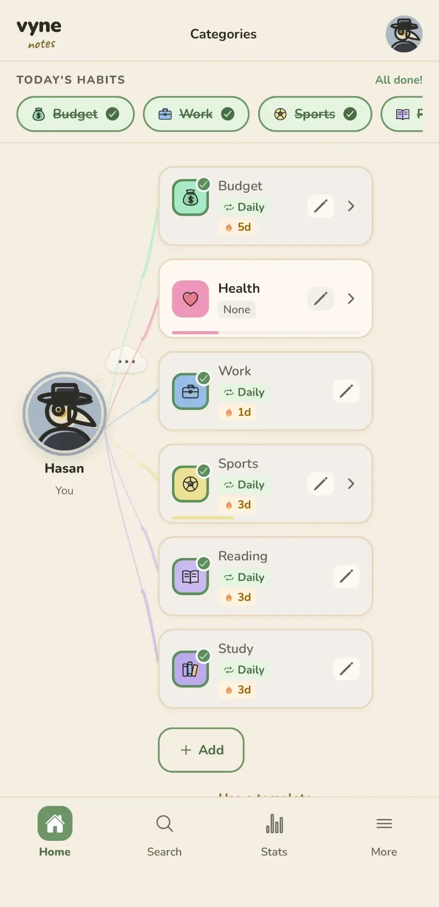
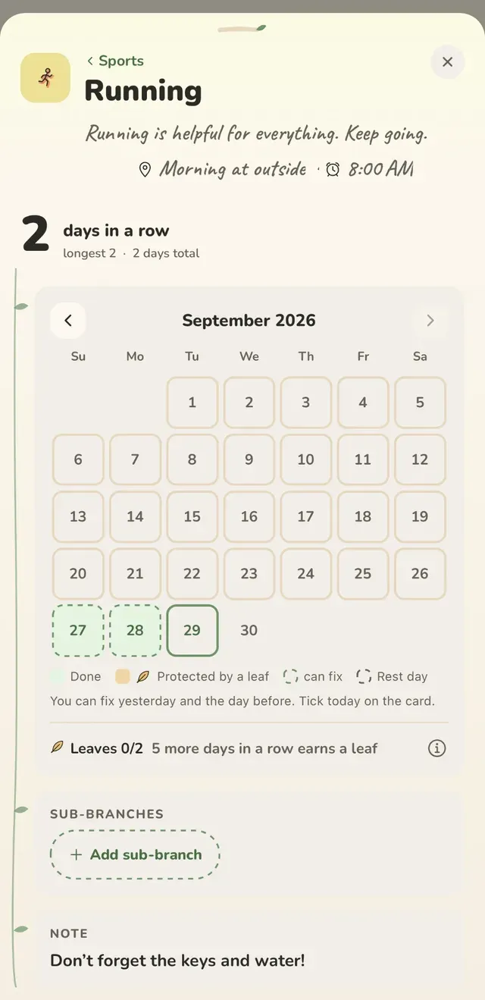
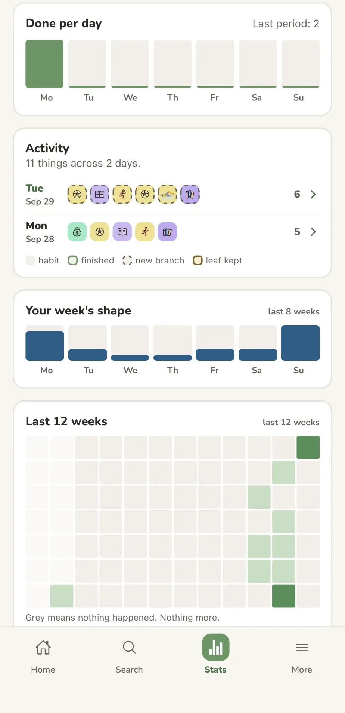
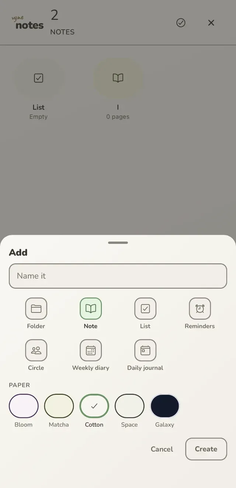

It's night. Switch the site to the app's Galaxy paper?
Free · no ads · no account needed
Habits that forgive a bad day.
One calm place for your habits, your journal and your notes. Your life branches out from one point, you, to the right. Miss a day and a leaf you've earned saves it; sick or travelling, your streak waits.
The Android version is in Google Play review right now; this button goes live once it's approved.
made by just me, for my family and friends · Hasan
Welcome backNothing to catch up on. What changed since your last visit is under What's new.

If you like: pull the bud to the right and watch your vine grow.
you
Missing a day won't break your streakDo it 7 days in a row and you earn a leaf; it saves a missed day.
Sick or away? Your streak waitsRest days are unlimited and cost no leaf.
Works offline, no accountYour data stays on your phone. No ads.
One notification a day, at mostNo guilt words. Or none at all.
How it works
Your life isn't a list, it's a vine
Three ideas: everything branches out from you to the right; missing a day doesn't break your streak; your day lives in one place. You can touch everything below.
Everything branches out from you, to the right
In a flat list, a work deadline sits right next to "buy milk". In Vyne you're in the middle; everything that matters opens a column to the right, and branches open columns of their own.
A flat list
Build your own vine
Tap one or type your own. Up to six branches; each grows two small twigs.
Leaves are earned. Rest is free.
A small simulator running the app's own rules. Pick a mode, then tap the days.
You earn a leaf after 7 days in a row, you can hold at most 2, and a leaf only saves the day before. Rest, sick and travel days are unlimited: your streak waits and no leaf is spent.
0
donekept by a leafrest (streak waits)streak broke here
Down to day 100
Scroll down inside the well: the first hundred days of a habit, by the app's rules.
Day 1
An ordinary day, seven stops
A day instead of a feature list. At each stop, first the problem, then how the app handles it.
07:30
Features
Every piece, and how to use it
Three big branches, just like the app. Every card has a "How to use it" underneath. Pieces marked new arrive with 1.4.0, which is in App Store and Google Play review right now.
The map
The shape of your life
six buds, one by one
A new first runnew
I open a new app and don't know where to begin.
How to use it
On first launch a single vine grows: your name, your first branch.
Six buds open one by one: Notes, Journal, Reminders, People, Thought cloud, Stats.
Pick a daily check-in time if you like; then your first leaf.
Branches and the path
My life doesn't fit in a flat list.
How to use it
Grow a branch from your profile: Work, Health, Home…
Each branch opens its own column to the right; "+ Add" makes a sub-branch.
The path at the top always shows where you are; tap any step to jump back.

Branch pagenew
I want a habit's whole story in one place.
How to use it
Tap a card and its page opens.
A big streak: days in a row, longest, total.
Fix yesterday and the day before in the calendar; sub-branches, a note and money live here too.
10 min walk after evening tea · the armchair
every day 9:00 pm
Habits, cues and timesnew
I mean to do it, then forget when.
How to use it
Turn a branch into a habit; today's sit at the top.
Write a "when / where" cue: "After evening tea · the living-room chair".
Give that habit its own reminder time, if you like.
7 days in a row, one leaf hold 2 at most
Leaves
Miss one day and the whole streak is gone.
How to use it
Do it 7 days in a row and you earn a leaf; you can hold up to 2.
Miss a day and a leaf saves it: "A Leaf Fell".
A leaf only saves the day before; two empty days in a row break the streak.
your streak waits: it doesn't grow, it doesn't break
Rest daysnew
I'm sick, or away; I don't want my streak to break.
How to use it
Tap the day: "or take a break today".
Pick Rest, Sick or Travel. As many as you need.
Your streak waits: it doesn't grow, it doesn't break. No leaf is spent.
Welcome backNothing to catch up on. Pick one for today.
Welcome backnew
I haven't opened it for days; everything will be red now.
A big change is coming and I don't know where to start.
How to use it
Nine one-tap starts: Exam Period, Moving House, New Job and more.
Pick the date; branches and steps come ready.
Try one right now in "Try a template" below.

Stats as a lensnew
Am I actually getting anywhere?
How to use it
Pick a week, a month or a year.
One plain sentence on top: "About the same as your usual."
Done per day, your week's shape, the last 12 weeks. Grey means nothing happened. Nothing more.
Exam Period is over⋯ → Archive
Archivenew
Finished things crowd the vine.
How to use it
On a finished branch: ⋯ → Archive.
It leaves the vine; your stats stay the same.
Always findable under "Archived" in Search.
Notebooks
Everything on your mind
Send the report on MondayLanded in your Inbox
Thought cloudnew
A thought flies away before it finds its place.
How to use it
A little cloud rises next to your profile bubble.
Tap, write: it lands in your Inbox.
Later, "Send to…" the right folder. Don't want it? Hide the cloud.
vyne notes
vyne / notesnew
How do I get to my notes again?
How to use it
"notes" is pencilled under the logo.
One tap opens Notes.
Inside Notes, its mirror takes you back to the vine.

Notes and folders
My notes are scattered everywhere.
How to use it
Unlimited folders; put notes, lists or reminders inside.
Folders open and close like bubbles.
Five papers; Cotton now follows all four themes.
Page 1Page 2
Milk
Eggs
Tomatoes
Lists
My grocery list gets too long to follow.
How to use it
Split a list into named pages.
Tick items, move them between pages.
Deleted by mistake? Undo.
Pay renttomorrow 9:00 am · monthly
Snooze 15 minTomorrow
Reminders
Rent, bills, appointments: always the last minute.
How to use it
Pick a date, a time and a repeat.
Get an early heads-up if you want one.
When it rings: "Snooze 15 min" or "Tomorrow".
What went well today, and why? A year ago today
Journal
I want to journal, but the blank page scares me.
How to use it
One page a day; if you don't know what to write, it offers a question.
On Mondays, three more questions about the week.
"A year ago today" and a calendar of past days.
Monwalked in the rainTuecalled momWedearly nightThuslides done!Fripizza nightSatthe marketSunnothing, it was nice
Weekly diary
I don't have time to write much.
How to use it
A whole week on one page.
One line a day is enough.
Look back through the list of weeks.
Mombirthday in 3 days
Sam"started a new job"
People
I forget birthdays, and what the people I love told me.
How to use it
Add a person and their birthday.
If you like, one notice the evening before.
Jot short notes: "What did they say?"
Yours
How it looks, and your data
Cotton · Matcha · Bloom · Space · GalaxyLight · Warm · Dark · Midnight
Themes and papers
I want it easy on the eyes, and to feel like mine.
How to use it
Four themes: Light, Warm, Dark, Midnight.
Five papers: Bloom, Matcha, Cotton, Space, Galaxy.
The "Look" button at the top of this site does the same.
Drawn for Vynenew
Emoji look different on every phone.
How to use it
Every icon and character in the app was drawn just for Vyne, in four styles by size. The drawings on this site are the same ones.
36 characters for your profile, or your own emoji.
Your saved emoji never change, only how they look.
cafe
Café listNotes · folder
March 12Journal · "the café by the park"
Search everythingnew
Where did I write that down?
How to use it
Search finds branches, notes, lists, journal days and people.
It ignores accents: "cafe" finds "café".
Tap a result and it opens right there.
VyneThree branches for today. No rush.
at most once a day
Kind notificationsnew
Apps keep making me feel guilty.
How to use it
The evening check-in is one calm sentence.
Words like "you'll lose your streak" are banned, and a test guards it.
At most once a day. Or never, if you'd rather.
AddReplaceUndo the last 3
Backup, moving and importnew
Will I lose everything when I change phones?
How to use it
Your data stays on your device; export to a file if you like.
Importing never duplicates: "Add" or "Replace", and the last 3 imports can be undone.
"Add what's missing" brings deleted items back; your cloud backup status fits in one line.
Try a template
In the app, tap "Create" and these branches join your vine.
Five papers, five pages
Each page is a real paper from the app. Swipe the page or use the arrows.
1
Why I made it
→
My life didn't fit in a flat to-do list. A work deadline sat right next to "buy milk", birthdays lived in one app, the journal in another.
I wanted all of it in one place, each thing in its own spot. That's how Vyne began.
— Cotton now follows all four themes
2
Everything is a branch, to the right
You're in the middle. Everything that matters opens a column to the right, and branches open columns of their own. The path at the top always tells you where you are.
you › work › report
3
You got sick. Your streak waits.
In thirty days you forgot one: a leaf you'd earned saved it. You were also sick for two days: you marked them "Sick", and the streak neither grew nor broke.
leaves are earned, rest is free
4
Folders open like bubbles
Home
School
Recipes
Groceries
Ideas
Holiday
Tap "notes" under the logo and Notes opens. Tap a folder and its contents come out of that bubble; go back and they fold into it again.
vyne / notes
5
Night, and one question
The journal is one page a day. If you don't know what to write, it offers a question: "What went well today, and why?" On Mondays three more come, to look back at the week.
Galaxy paper is always night. So is this page.
good night
1 / 5 · Cotton
Who makes it
There's a letter on the desk
Each note on the desk is a problem and its fix. On a computer you can move the notes around.
Hi,
I'm Hasan, and Vyne is made by just me, not a company. I built it for my family and friends, because every app we tried was either full of annoying ads or scattered our life across ten different places.
No ads, no account needed. If something feels off, write to me. I read every message.
— Hasan
homeundecided daysbranch pageno ads · no account
problemA thought flies away before I find the right place for it.
fixThe cloud next to your profile bubble: tap, write, it lands in your Inbox.
problemI got sick, lost my streak, and gave up.
fix Mark that day "Sick". Your streak waits: it doesn't grow, it doesn't break.
you can move the notes
Why is it like this?
From the notes I kept while building the app. Some are still sprouts, some are trees by now.
tree
Why day 66?
Not a random number. In Phillippa Lally's study at UCL, the median time for a behaviour to become automatic was 66 days. It varies a lot from person to person, so 66 is a threshold, not a finish line.
— H.tree
Why are leaves earned?
The goal isn't never missing, it's never missing twice in a row. But if leaves were free, a streak would mean nothing. First the habit becomes a habit, then it protects you.
— H.bud
Why are rest days unlimited?
You don't choose to get sick or to travel. Counting those as missed days would punish you. Your streak waits: it doesn't grow, it doesn't break.
— H.tree
Why only one notification a day?
The point isn't to hook you on the app, it's to add something to your life. A flood of notifications grabs attention but eats trust. One, at your time.
— H.tree
Why are the celebrations a surprise?
Something happens on day 7, 30, 66 and 100. We won't show it here: seeing it early would spoil it.
— H.bud
Why is the vine empty after setup?
We tried starting with a ready-made template, but then the vine would be ours. An empty vine is yours; templates are one tap away when you want them.
— H.tree
Why no account?
A habit app doesn't need your email. Everything runs on your phone. An account is only for backup, if you want it.
— H.sprout
Why isn't cloud backup encrypted (yet)?
Plainly: we could technically read your cloud backup. We don't, but saying "nobody can" would be false. End-to-end encryption is planned; the hard part is making sure a forgotten key doesn't lose your data.
— H.tree
Why no template gallery?
A gallery where everyone shares templates is a social network that needs moderating. That doesn't fit an offline app with no account. To share, send a file.
— H.sprout
Why does it branch to the right?
We read left to right. You're on the left, your life opens to the right, each branch one more column. The path at the top reads the same way: you › work › report.
— H.
Toys
Three small toys
Each one explains something in the app. But fun comes first.
Can't decide? Spin the wheel
Write three things on your mind. Let the wheel pick, then just start for 2 minutes. The wheel in the app works the same way.
Which template are you?
Three questions. At the end, the template that fits you and your first three branches.
A year in leaves
One year, 365 leaves on a vine. Green is done, gold is kept by a leaf, blue is a rest day. Missed days are faint, never punished.
One more hidden toy
Press and hold the "vyne" logo at the top. What would Vyne look like in 1998?
What's new
Release notes
The app is alive. What changed in each version, written like margin notes.
1.4.0September 2026 · in App Store and Google Play review
The biggest update since Vyne began.
A daily journal and a weekly diary, on the paper you like
Notes, folders, lists and reminders, all searchable
A page for the people you love
A thought cloud for whatever is on your mind
Rest days: sick or travelling, your streak waits
A welcome-back card after a few days away, with no guilt
Stats by week, month and year, in plain words
Your own reminder time and a "when and where" cue for each habit
Archive branches you've finished
A new first run, a new icon, and icons and 36 characters drawn just for Vyne
And Android: the first release on Google Play
1.3.0August 2026
Templates went from 4 to 9
Finish a habit and the next one steps forward
Card density: Full, Simple, Minimal, Custom
Multi-select across branches, and note folders
Profile: 16 colours, 60 avatars, your own emoji
1.1 – 1.2July – August 2026
First App Store release
Leaves, the wheel and celebrations
Budget template and amount tracking
Promises
You set the rules
Promises are easy. Here is how the app actually works today.
It works without a connection.
Your data stays on your device. It goes nowhere unless you turn on cloud backup yourself.
No account needed.
No sign-up, no email. Open it and start. An account is only for optional backup across devices.
Once a day. At most.
One gentle check-in, at a time you choose. You can also give a habit its own time. Or none at all.
Your attention isn't for sale.
No ads. If that ever changes we'll say so plainly, and existing features won't quietly get paywalled.
Things we chose not to build
A social feed Nobody sees what you do.
Points and a badge shop Habits aren't a game.
"You'll lose your streak!" No guilt words in notifications.
A pet that wilts or cries A missed day is never punished.
A required account It's optional.
Pretending to have encryption we don't Cloud backup is not end-to-end encrypted, and we say so plainly.
Questions
Frequently asked
Can I download Vyne now?
On iPhone, yes: it's free on the App Store. The Android version is in Google Play review right now; once it's approved, the Google Play button on this page goes live.
Is it free?
Yes, with no ads. If that ever changes we'll be upfront about it, and existing features won't quietly get paywalled.
Do I need an account?
No. Vyne works fully offline with no sign-up. An account is only for optional cloud backup.
What happens if I miss a day?
If you've done it 7 days in a row you've earned a leaf; it saves that day and your streak goes on. You can hold at most 2, and a leaf only saves the day before. Sick or travelling? Mark the day: your streak waits and no leaf is spent. Try it here.
Can I delete my data?
Yes, any time, right inside the app. Both the data on your device and any cloud backup.
What if I change phones?
Export to a file and import it on the new phone; importing twice makes no duplicates, it only adds what's missing. Or restore from cloud backup.
Who makes this?
One person. No team, no company behind it. I use it every day myself. Read the letter.
Get Vyne
Free, no ads, no account needed. One tap is all it takes.